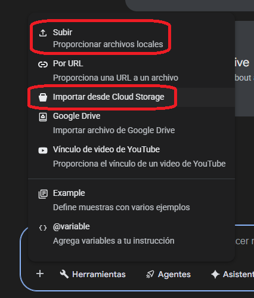
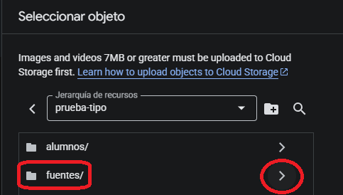
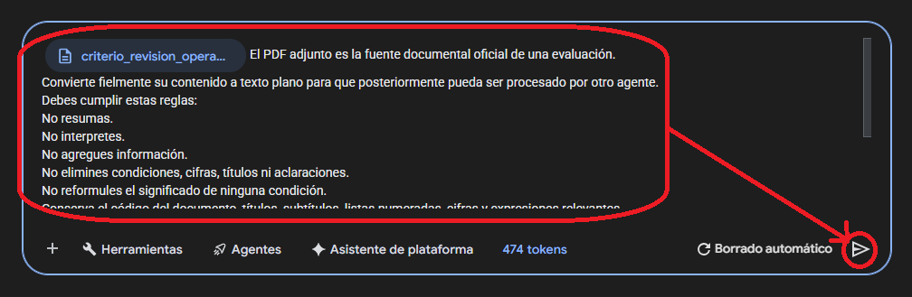
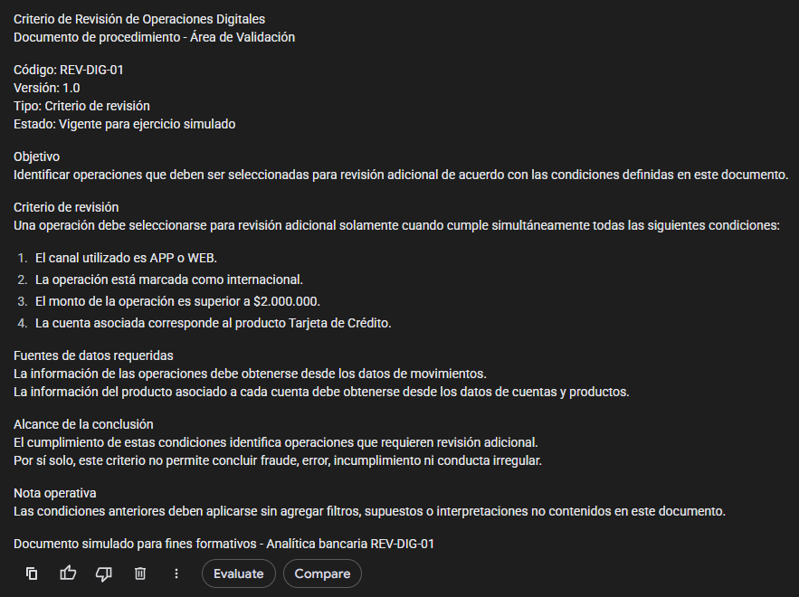
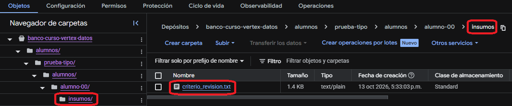

Preparación de la Prueba Tipo
En esta primera parte prepararás tu espacio de trabajo, localizarás el documento oficial, lo importarás en Gemini, lo convertirás fielmente a texto plano y subirás criterio_revision.txt a tu carpeta personal.
Cuando una captura muestre alumno-00, léelo solo como ejemplo. Sustituye siempre ese identificador por tu alumno-XX asignado.
Antes de comenzar
Necesitas acceso al proyecto del curso, al bucket compartido y al chat de Gemini utilizado en la actividad. No necesitas crear un bucket nuevo ni modificar permisos.
| Elemento | Ruta |
|---|---|
| PDF común | gs://banco-curso-vertex-datos/alumnos/prueba-tipo/fuentes/criterio_revision_operaciones_digitales.pdf |
| Tu espacio | gs://banco-curso-vertex-datos/alumnos/prueba-tipo/alumnos/alumno-XX/ |
| TXT que debes preparar | alumno-XX/insumos/criterio_revision.txt |
Preparar tu espacio en Cloud Storage
Objetivo
Confirmar que estás en el bucket correcto y entrar a la carpeta asignada a tu alumno.
Procedimiento
- Abre Google Cloud Console. Si todavía no has iniciado sesión, vuelve al acceso inicial de la Prueba Tipo y confirma después el proyecto del curso.
- Abre Cloud Storage → Buckets.
- Entra al bucket banco-curso-vertex-datos.
- Navega a alumnos/prueba-tipo/alumnos/.
- Entra únicamente a tu carpeta alumno-XX/.
- Comprueba la estructura de trabajo: insumos/, resultados/ e informe/.
- Si una carpeta de tu propio espacio falta y la actividad te permite crearla, créala allí. No crees ni elimines carpetas fuera de tu espacio.

Comprueba antes de continuar
- Estás en banco-curso-vertex-datos.
- Tu ruta contiene alumnos/prueba-tipo/alumnos/alumno-XX/.
- No estás dentro de la carpeta de otro alumno.
- Puedes identificar insumos/.
Localizar el documento fuente
Objetivo
Identificar el PDF oficial sin modificarlo ni copiar una versión diferente.
Procedimiento
- Dentro del mismo bucket, vuelve a alumnos/prueba-tipo/.
- Entra a fuentes/.
- Localiza criterio_revision_operaciones_digitales.pdf.
- Confirma que la URI sea:
gs://banco-curso-vertex-datos/alumnos/prueba-tipo/fuentes/criterio_revision_operaciones_digitales.pdf
Comprueba antes de continuar
- El nombre del archivo coincide exactamente.
- La ruta termina en prueba-tipo/fuentes/.
- No estás usando un PDF descargado de otra actividad.
Importar el PDF en Gemini
Objetivo
Entregar a Gemini exactamente la fuente oficial almacenada en Cloud Storage.
Procedimiento
- Abre el chat de Gemini utilizado en el curso.
- Inicia un chat nuevo para evitar contexto innecesario.
- Abre la opción para añadir/importar una fuente.
- Selecciona Importar desde Cloud Storage.
- Busca el PDF oficial de la ruta anterior.
- Adjúntalo y confirma que aparece incorporado a la conversación.
- No ejecutes todavía una solicitud de análisis libre.


Comprueba antes de continuar
- El PDF aparece adjunto/importado en Gemini.
- Es el documento de fuentes/.
- Estás en una conversación limpia o controlada.
Convertir el PDF a texto plano
Objetivo
Obtener una representación textual fiel del PDF, sin resumir, interpretar ni completar información.
Prompt validado
Con el PDF ya incorporado, pega exactamente este prompt:
El PDF adjunto es la fuente documental oficial de una evaluación. Convierte fielmente su contenido a texto plano para que posteriormente pueda ser procesado por otro agente. Debes cumplir estas reglas: - No resumas. - No interpretes. - No agregues información. - No elimines condiciones, cifras, títulos ni aclaraciones. - No reformules el significado de ninguna condición. - Conserva el código del documento, títulos, subtítulos, listas numeradas, cifras y expresiones relevantes. - Conserva expresiones como “criterio de revisión”, “revisión adicional” y cualquier limitación expresada en el documento. - Si alguna parte no puede leerse con certeza, escribe `[CONTENIDO NO LEGIBLE]` en lugar de inferirla. Devuelve únicamente el texto resultante, sin introducción, explicación, comentarios adicionales ni bloques Markdown. Ese contenido será guardado posteriormente con el nombre `criterio_revision.txt`. Antes de finalizar, verifica que el texto represente fielmente el PDF original y que ninguna condición haya sido alterada.

Resultado esperado
La salida debe conservar el criterio documental completo. Como control mínimo, confirma que aparecen las cuatro condiciones simultáneas:
- canal APP o WEB;
- operación internacional;
- monto mayor a 2.000.000;
- producto Tarjeta de Crédito.
Comprueba antes de continuar
- No hay introducción del modelo.
- No se resumieron las condiciones.
- Las cifras y expresiones relevantes siguen presentes.
- Si algo fue ilegible, aparece [CONTENIDO NO LEGIBLE].
Guardar y subir criterio_revision.txt
Objetivo
Dejar el texto convertido en la ruta exacta que utilizará el agente.
Procedimiento
- Copia únicamente el texto devuelto por Gemini.
- Guárdalo localmente con el nombre exacto criterio_revision.txt.
- Vuelve a Cloud Storage.
- Entra a tu carpeta alumno-XX/insumos/.
- Sube criterio_revision.txt.
- Abre o inspecciona el objeto y verifica que no esté vacío.
- Confirma la URI final.
gs://banco-curso-vertex-datos/alumnos/prueba-tipo/alumnos/alumno-XX/insumos/criterio_revision.txt


Comprueba antes de continuar
- El archivo se llama exactamente criterio_revision.txt.
- Está en insumos/, no en resultados/ ni informe/.
- El contenido no está vacío.
- La ruta pertenece a tu alumno-XX.
Comprobación final de la preparación
| Control | Debe quedar así |
|---|---|
| Fuente oficial | fuentes/criterio_revision_operaciones_digitales.pdf |
| Fuente modificada | No. El PDF común permanece intacto. |
| Conversión | Fiel, sin resumen ni interpretación. |
| Archivo preparado | criterio_revision.txt |
| Ubicación | alumno-XX/insumos/ |
| Siguiente paso | Ejecutar el Analista de Validación Integrada. |